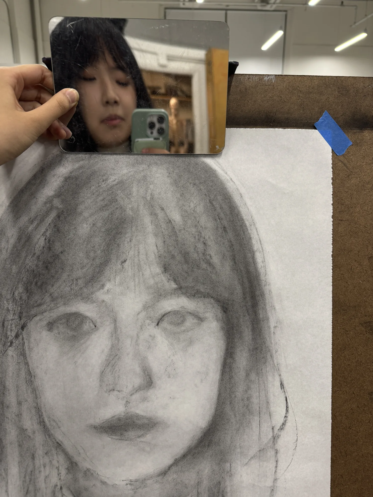
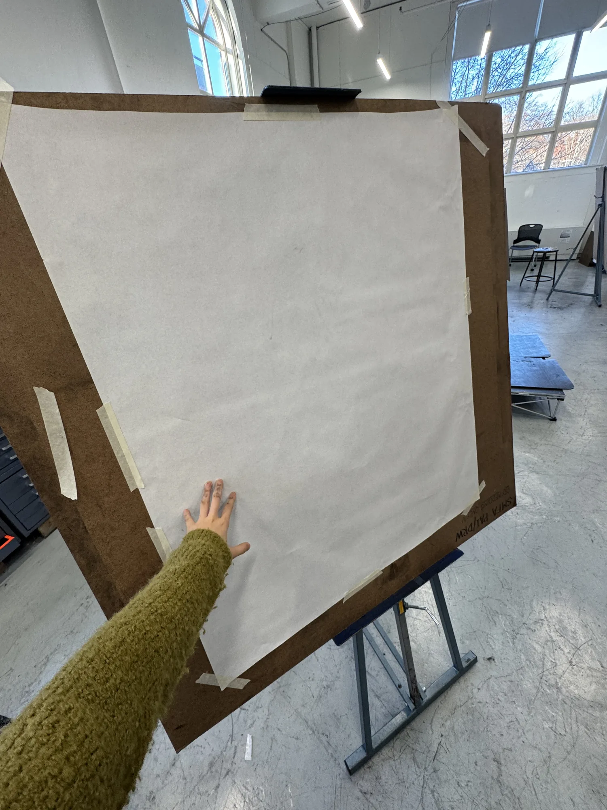
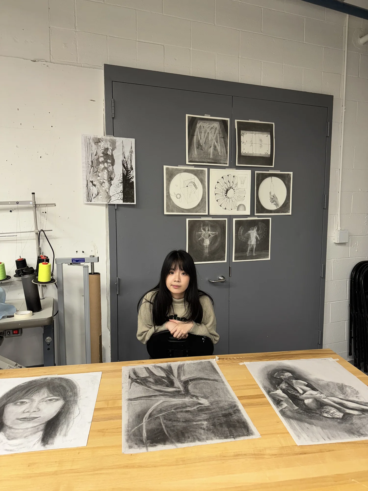
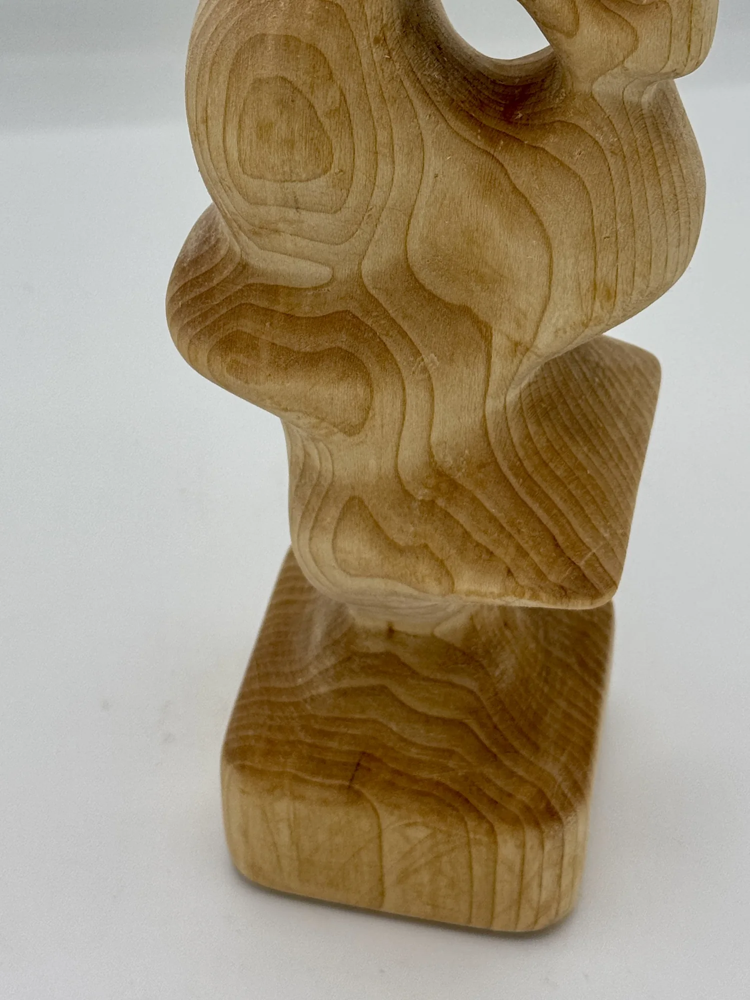
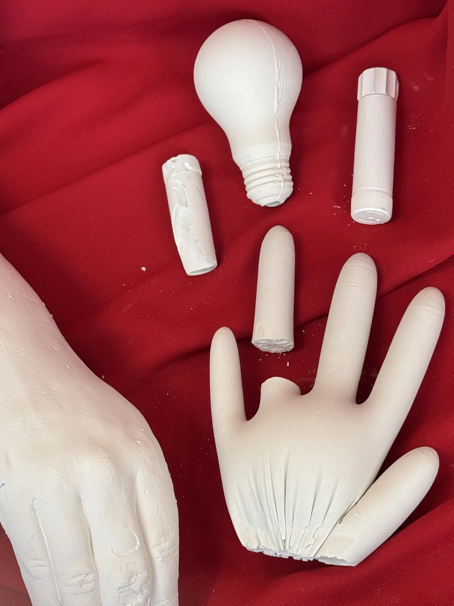
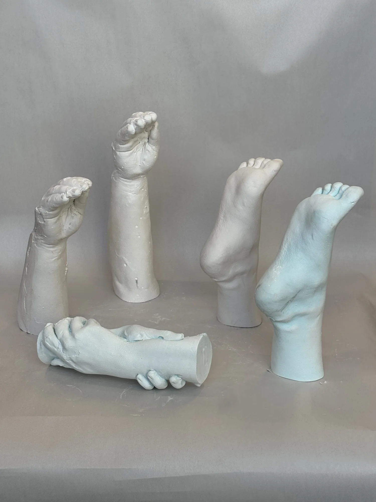

I really like trying out different media. A big part of the fun is not always knowing how something will turn out. Different materials can give you completely different results, so it sometimes feels a little like opening a blind box. I enjoy experimenting, making mistakes, and seeing what happens along the way. It keeps making art fun for me because there's always something new to try.





